My name is .jpg, and I create esport designs and productions for numerous organizations. I’ve been working in esports as a hobby for more than four years. I’ve organized major tournaments in the past, but
nowadays I focus most of my time on creating awesome looking productions through design and code. I
also create tools to help streamline processes in an esports production. While I mainly reside in
the competitive Splatoon community, I’m branching out and creating productions for more games such
as Super Smash Bros, Overwatch, Valorant, and much more! The organizations I specifically work with
are Inkling Performance Labs, Level1, and the Gaming and Esports Club at ISU.
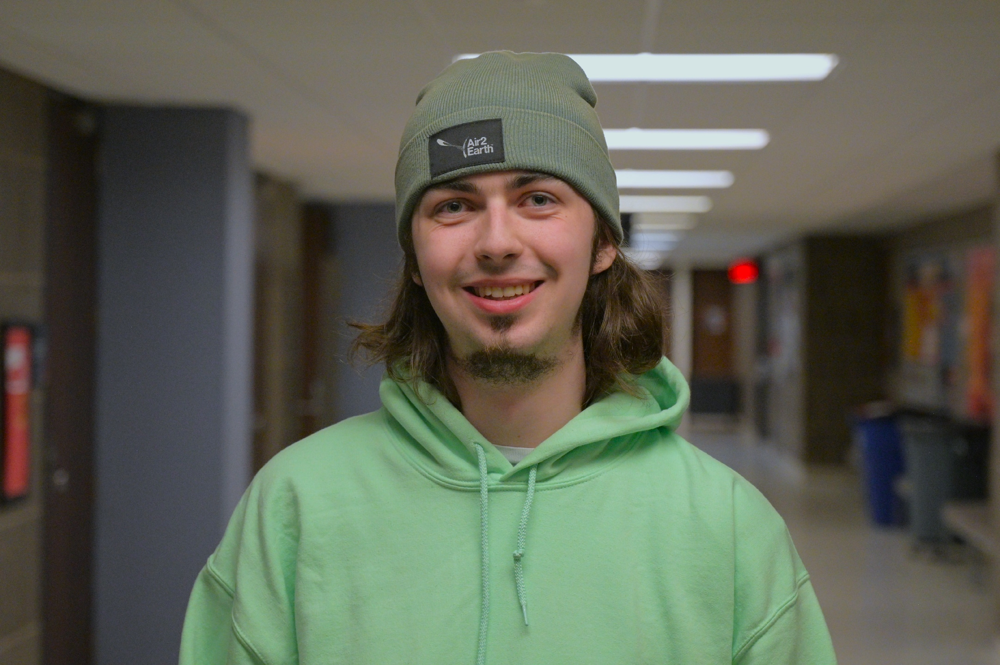
.jpg
Esports production and design.
About
Contact
Feel free to reach out if you’re interested in working with me, or if you just want some production
questions answered!
My twitter messages are typically open: @PlayLowInk
If not, find me on Discord: .jpg.jpg
If all else fails, try my email out: jpg@iplabs.ink
If not, find me on Discord: .jpg.jpg
If all else fails, try my email out: jpg@iplabs.ink
Inkling Performance Labs
Inkling Performance Labs is a competitive Splatoon tournament and production organization. Its goal is
to unite and grow the community by creating high quality Splatoon tournaments. We want to promote the
growth of Splatoon, both in working to bring in new members, along with helping improve those already in
the community. I’ve been with IPL since it’s inception for tournament organizing, design, and
production.
IPL VS
Started development in November 2022 - Series streaming since October 2023
My role: Production lead
My role: Production lead
IPL VS is a Splatoon exhibition match production. Two teams are invited to battle live on our Twitch in a best of 9 with counterpicks set. Featuring quality match-ups, the best casters, and a detailed packed stream.
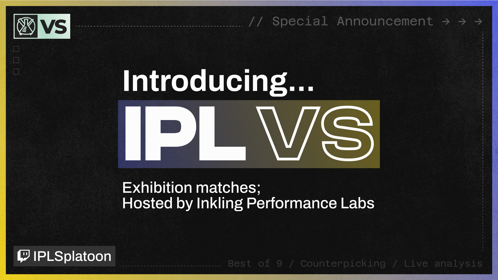
Proving Grounds
October 2022 - Maintained today
My role: Design & Livestream Overlay.
My role: Design & Livestream Overlay.
Proving Grounds, the sequel to a past IPL tournament named Testing Grounds, is a bi-weekly Splatoon
tournament taking place on Friday nights. It includes a small map pool and a format catered to top
level play. My job was to handle all the production needs for this event. I've created nearly all
the graphics (not the logo) seen in advertising as well as the stream overlay. The main challenge
was how fast we wanted to get PG out the door, since demand for tournaments was at an all time high.
I only had a couple days to get the production ready.

Swim or Sink
September 2022 - Maintained today
My role: Redesign tournament & Create new livestream overlays
My role: Redesign tournament & Create new livestream overlays
Swim or Sink is a weekly tournament series aimed at providing players with practice against other
teams of varying skill levels. SOS has been running since the creation of IPL, and it was due for a
redesign. This was the project that taught me a lot of the production skills I have today. I've
created all the graphics (not the logo) you see on social media and the stream overlay.

maps.iplabs.ink
April 2022 - Maintained today
My role: Creation of website
My role: Creation of website
Creating Splatoon tournament map lists is a headache, and I strongly dislike doing it by hand. I
knew I wasn't the only one with this opinion. After numerous past projects trying to create an
automated map generator, I've finally perfected the algorithm to create nearly perfect map lists,
ending error-prone hand-made map lists in IPL. maps.iplabs.ink

IPL Media Creator
December 2021 - Maintained today
My role: Creation of bot and its assets.
My role: Creation of bot and its assets.
To boost social media engagement, I want to create a way to quickly put tournament clips on the IPL
twitter. My solution was to create a discord bot that could take a Twitch clip and convert it into a
downloadable video file with our branding added to it. With the help of this tool, any tournament
organizer in IPL can take a moment from our livestream and put it on social media in about 1 minute.
In January 2023, I added the ability to create graphics instantly using a collection of simple
commands. Thanks to this, no software or previous graphic design experience is needed to create
graphics for IPL events.

Low Ink
Begun staffing 2019 - Stepped down from Head TO position in June 2023
Past roles: Head Tournament Organizer & Various Graphics.
Current Role: Advisor for new leadership & Livestreamer.
Past roles: Head Tournament Organizer & Various Graphics.
Current Role: Advisor for new leadership & Livestreamer.
Low Ink is a two day Splatoon 3 tournament for newer and lower level players. Our goal is to
give teams a chance to get into the Splatoon 3 tournament scene and gain valuable competitive
experience. This is achieved by barring higher-level teams from playing in this event. Each team
is checked over manually to ensure they are at a suitable skill to play. Low Ink has had
multiple events with more than 100 teams and is considered one of the biggest tournaments in the
scene.
Learn more about Low Ink at its website (which I've created!) lowink.iplabs.ink
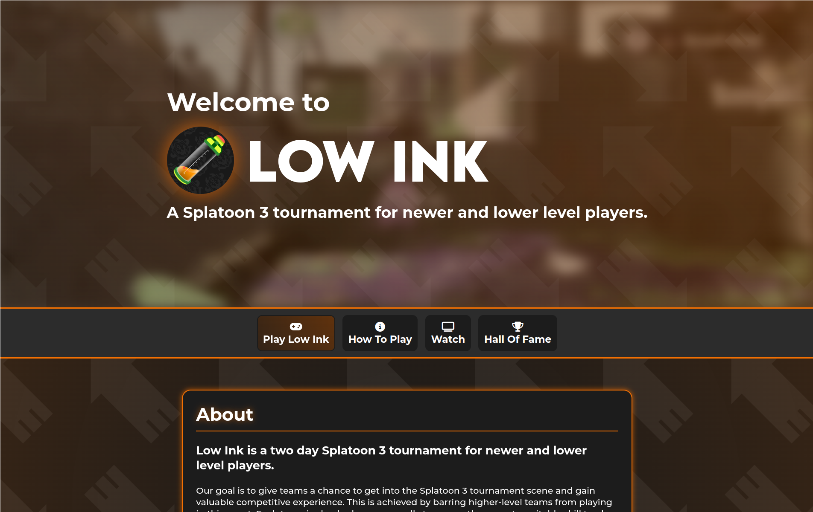
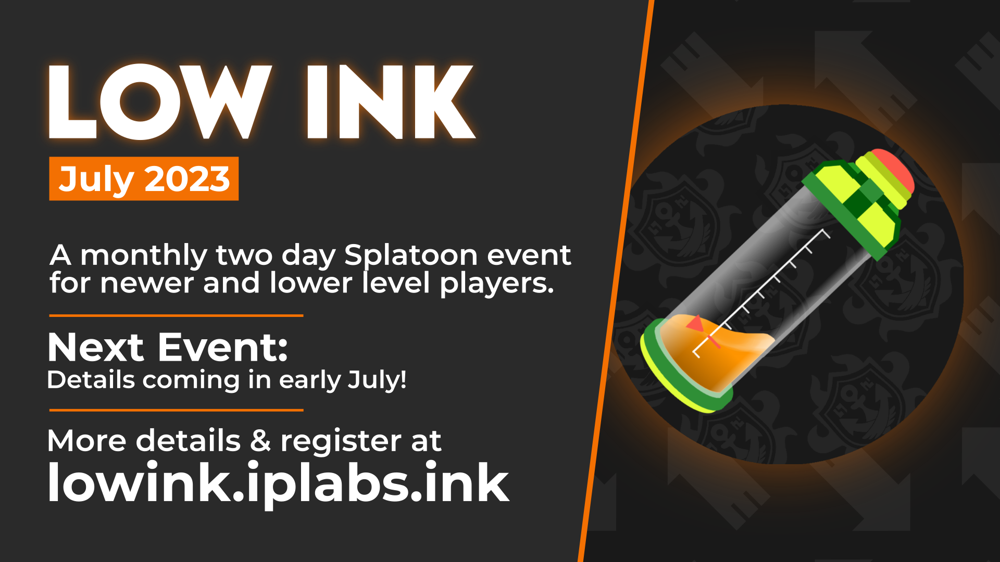
Level1
Level1 is a production company based in the northwest of the US. They specialize in livestreaming in-person fighting game tournaments, primarily Super Smash Bros. and other platform fighters. I’ve known people from Level1 for years and I’ve worked with them on some productions, but now, they’re starting to come to me for freelance work!
Battle of BC 5
May 2023
My role: Creation of livestream graphic sources from preexisting concepts. Connected those graphics to respond to inputs from a dashboard, which was created by another team.
My role: Creation of livestream graphic sources from preexisting concepts. Connected those graphics to respond to inputs from a dashboard, which was created by another team.
I was hired by Level1 to create livestream graphics for the Canadian Smash Major, Battle of BC 5. I was given concepts on what the graphics should look like. My role was to take these concepts, and turn them into an actual overlay that will work in OBS. These graphics had to respond to dashboard inputs and update accordingly to the data provided. In total, I had to create about 13 different scenes.
This project meant a lot to me. I got into esports through smash, so it was amazing to finally work on a major smash production. I hope to do more in the future.
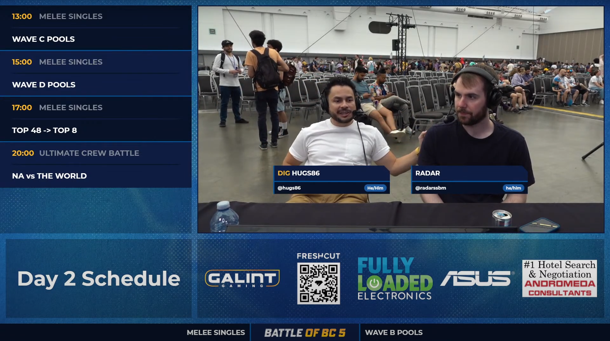
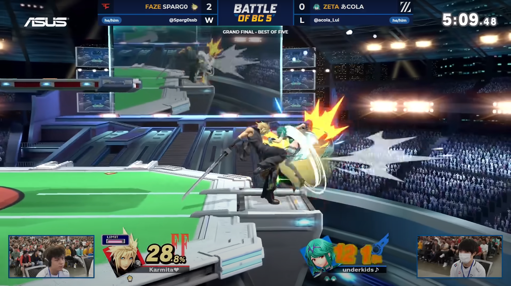
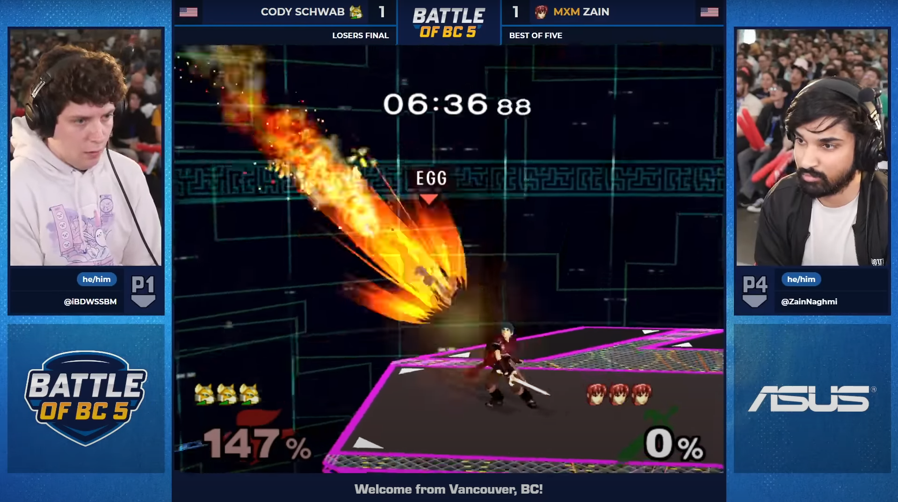
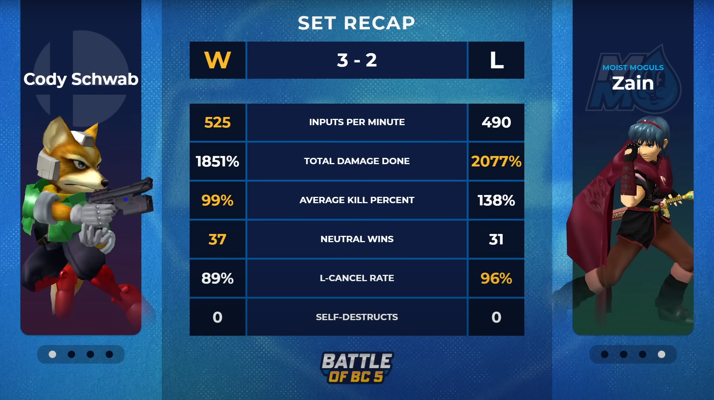
Gaming and Esports Club at ISU
The Gaming and Esports Club at ISU is a student run organization which specializes in managing a variety of esports teams and hosting on campus events for anyone interested in gaming. For the 2023-2024 academic year, I was elected to be the design chair for the club. I’ll be creating numerous graphics and livestream overlays for the club throughout the year.
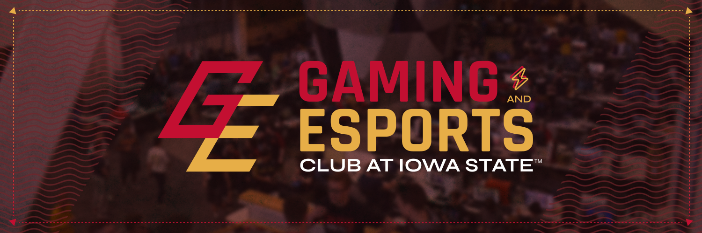
Charity Stream 2023
Started work June 2023 - Streamed in October 2023
My role: Create livestream overlays and graphics. Run the livestream and its related tech.
My role: Create livestream overlays and graphics. Run the livestream and its related tech.
Every year around Halloween, GE will run a charity stream with a variety of games. Members of the club are welcome to join the event, hosted in the ISU gaming and esports room. People are encouraged to donate through fun incentives!
For 2023, we ran a 2 day stream with half the stream online and the other half in the ISU gaming and esports room. Alongside the graphics all coded by me, I was in charge of handing tech for getting donations on stream and getting people's computer feed to the stream using an RTMP server. We raised $5,445.69 for Games For Love.
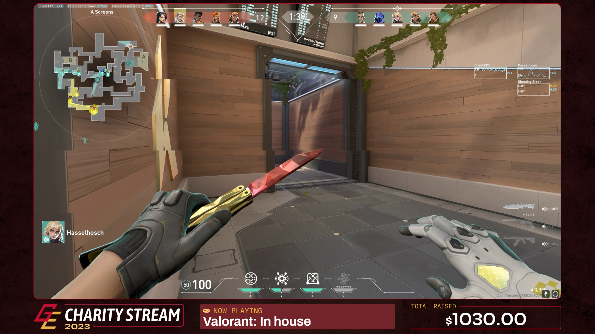
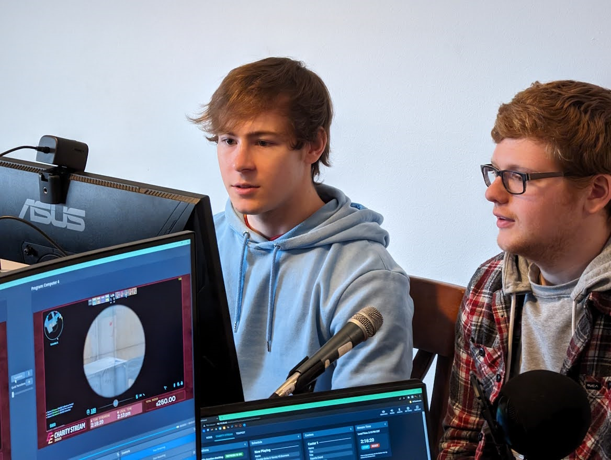
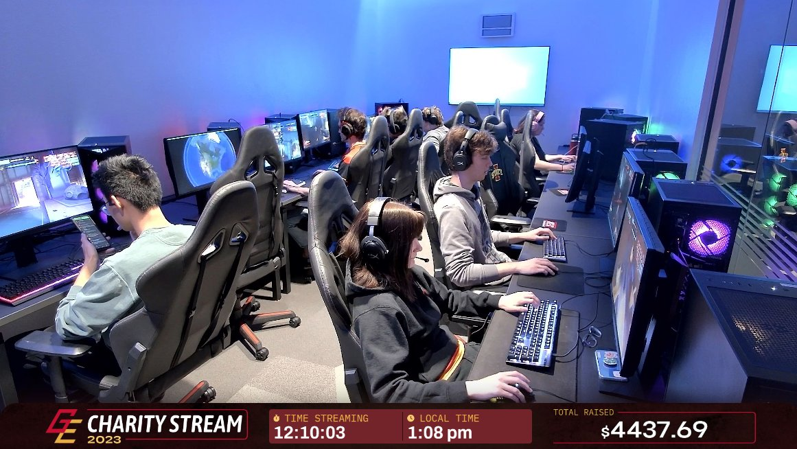
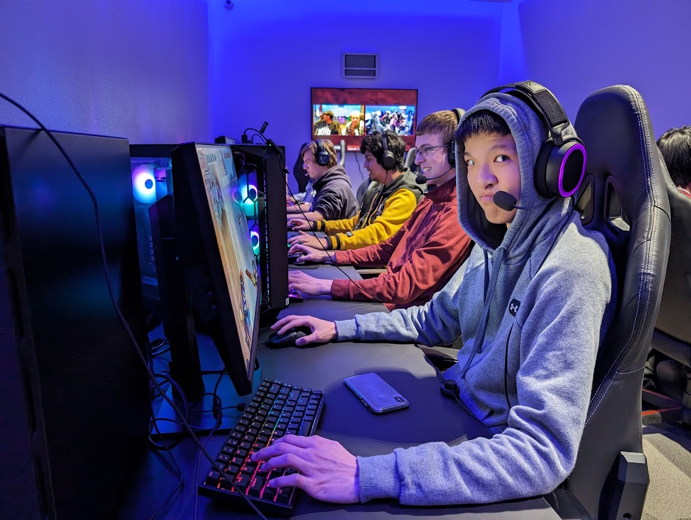
Tempest
September 2023 - Maintained today
My role: Creation of livestream overlays and graphics. Occasionally run the livestream.
My role: Creation of livestream overlays and graphics. Occasionally run the livestream.
Tempest is a weekly smash tournament hosted by the Gaming and Esports Club at ISU and Ames Smash. I've created the livestream overlays and graphics for this event, which is implimented in the GE livestream overlay hub for all the club's streamers to access.
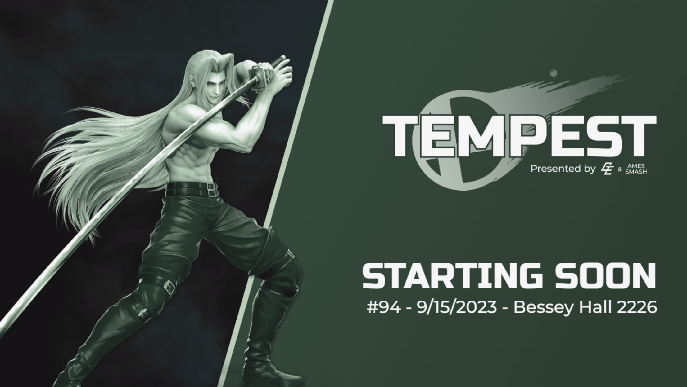
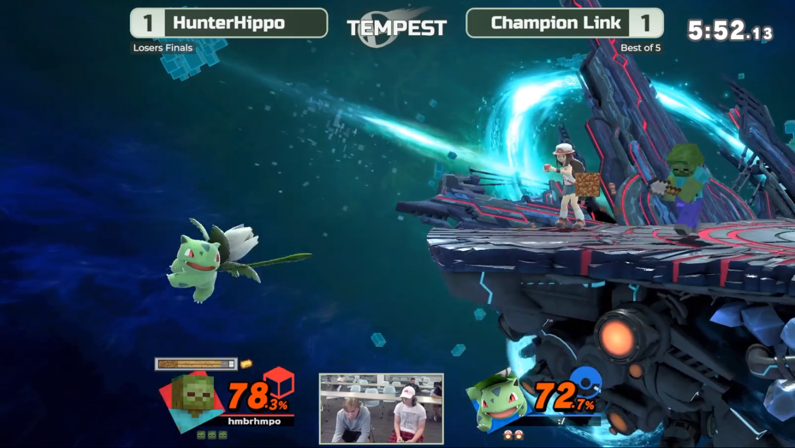
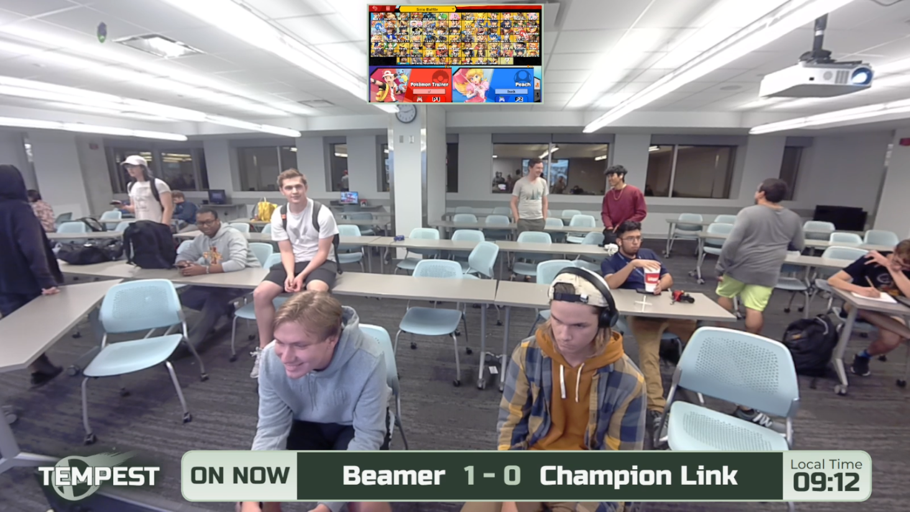
Player Overlays
May 2023 - Maintained today
My role: Creation of the overlays.
My role: Creation of the overlays.
To improve branding across all GE player’s livestreams, I’ve created a very easy to use, browser based source to add your name and social media to your livestream. The package comes with a “card scene” which can be overlaid on your gameplay, and a break scene for when you’re on break.
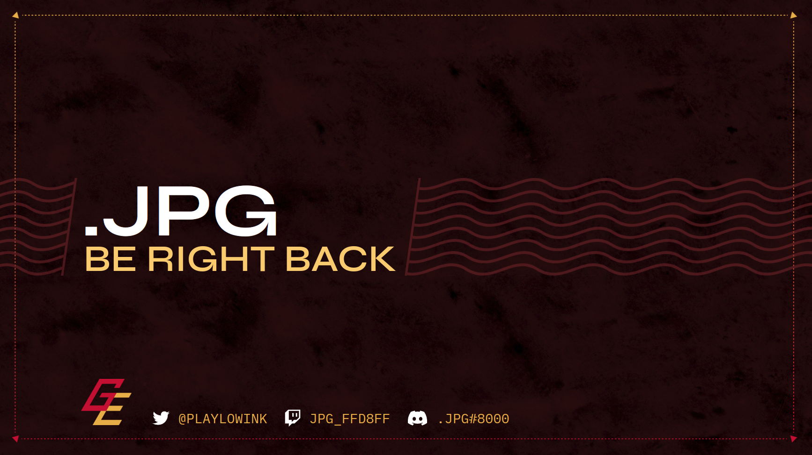
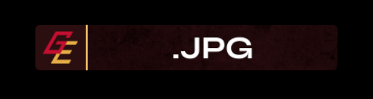